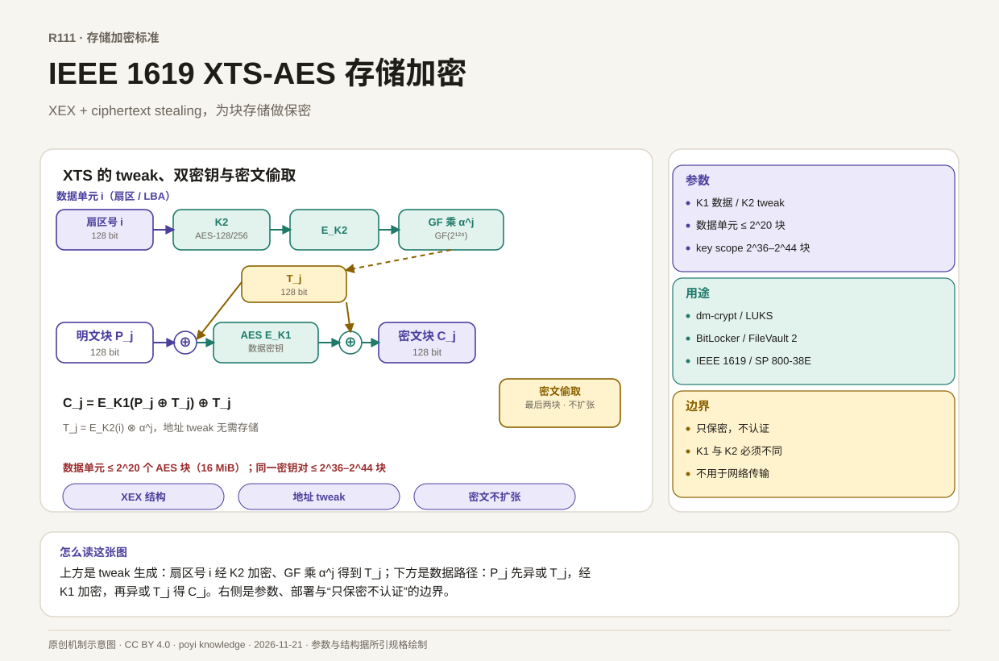
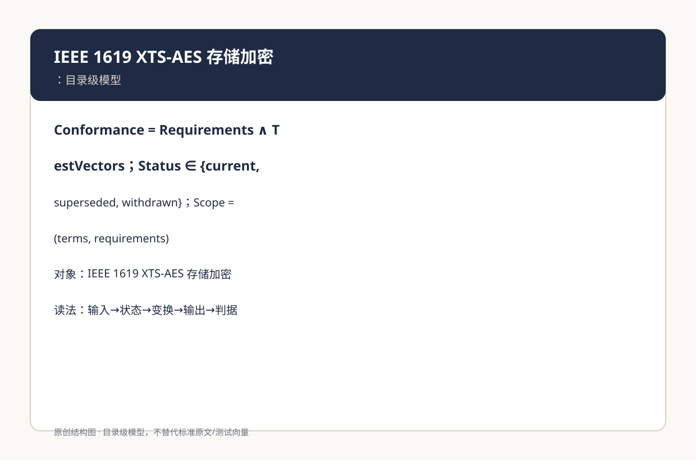

原理与机制
标准：IEEE 1619 XTS-AES 存储加密（IEEE 1619 XTS-AES storage encryption）。### XEX：先异或 tweak，再 AES，再异或
XTS-AES 是 XEX（XOR–Encrypt–XOR）的实例。对数据单元 i 内的第 j 个块 P_j，令 T_j = E_{K2}(i) ⊗ α^j，其中乘法在 GF(2^128)、α 是本原元；加密为 C_j = E_{K1}(P_j ⊕ T_j) ⊕ T_j，解密反过来。相同的明文在不同扇区或不同块位置会得到不同密文；同一位置重写则得到相同密文。### 两个密钥
XTS 的密钥是 K1 || K2，K1 加密数据，K2 只生成 tweak。AES-128 对应 256 位 XTS 密钥，AES-256 对应 512 位。两个子密钥必须不同；若 K1 = K2，存在选择密文攻击可破坏 XTS 的主要保密性保证。### 密文偷取
数据单元长度不必是 128 位的整数倍。最后两个块用 ciphertext stealing：先加密倒数第二块得到 CC，取前 b 位作为最后一块密文，剩余 128−b 位与最后一块明文拼成 PP 再加密，输出时交换最后两个密文块的位置。密文长度等于明文，不需要 padding，适合固定大小扇区。

为什么重要
存储设备按扇区随机读写，不能像 CBC 那样依赖整个文件的链式状态。XTS 的每个块可以独立解密，tweak 由扇区号/LBA 和块号隐式算出，不需要把 IV 或 nonce 存进磁盘；密文不扩张，适合原地加密。### 比 ECB 强在哪
ECB 下相同明文块产生相同密文，泄露扇区结构；XTS 用地址相关的 tweak 打散相同块。它不是认证加密，不能防篡改，但比纯 ECB/CBC 更适合磁盘的随机访问模型。
应用与实例
IEEE Std 1619-2007 定义 XTS-AES；NIST SP 800-38E（2010）批准它用于存储设备，并要求单个数据单元不超过 2^20 个 AES 块（16 MiB）。IEEE 1619-2018 把该限制写进标准，并限制总块数为 2^64；IEEE 1619-2025 又引入 key scope，把同一对密钥的块数限制在 2^36 到 2^44。### 部署
dm-crypt/LUKS、BitLocker、FileVault 2、OpenSSL、NetBSD cgd 等使用 XTS 衍生实现。典型扇区是 512 B 或 4 KiB，远低于 16 MiB 的数据单元上限；但整块磁盘累计的数据量会接近 key scope 的边界。

边界与攻击面
XTS 没有认证标签，攻击者可以重放、重排、篡改密文块；若攻击者能观察到明文–密文对并改写，可能操控解密结果。必须在文件系统或应用层加完整性（AEAD、HMAC、Merkle 树），或把 XTS 当作“防离线窃取”而不是“防主动篡改”。K1/K2 必须独立；同一 key scope 的块数要受限。2025 标准把 key scope 限到 2^36–2^44 块，按 2^128 生日界估算，碰撞概率约 2^-56 到 2^-40。扇区号必须唯一且不可重用；克隆、快照、磁盘重映射都要保证 tweak 不复用。### 不是传输加密
XTS 面向块存储，不适合 TLS 或网络传输；传输层应使用 AEAD。
历史与背景
IEEE 1619-2007 在 2007 年发布，定义 XTS-AES；NIST SP 800-38E 在 2010 年 1 月发布，把它批准为存储设备的保密模式。IEEE 1619-2018 修订了数据单元和总块数限制；IEEE 1619-2025 在 2025 年 6 月发布，加入 key scope 要求。### 前身与命名
XTS 源自 Rogaway 的 XEX；更早的 LRW 也是 tweakable 磁盘加密，但因安全性和实现问题被 XTS 取代。XTS 是 “XEX Tweakable Block Cipher with Ciphertext Stealing” 的缩写，名字直接说明了三个部件。
逐步示例与核验
形式模型与复算步骤
[S=\min_i S_i,\quad S_i\in{\text{密钥强度},\text{分组安全},\text{实现安全}}]
IEEE 1619 XTS-AES 存储加密的公开参数、密钥/随机数与消息；变量说明：S 为综合安全强度；各分量取最小值，不能只看密钥位数。1.读取标准规定的密钥/分组/模式参数。2.按标准表换算等效强度。3.取最弱分量作为系统强度。边界：公式只覆盖已登记的参数与假设；参数取值、标准版本和实现细节仍以来源为准。
参考出处
- Wikipedia search entry for IEEE 1619 XTS-AES 存储加密. https://zh.wikipedia.org/w/index.php?search=IEEE%201619%20XTS-AES%20%E5%AD%98%E5%82%A8%E5%8A%A0%E5%AF%86
- Handbook of Applied Cryptography (Menezes, van Oorschot, Vanstone). https://www.cacr.math.uwaterloo.ca/hac/